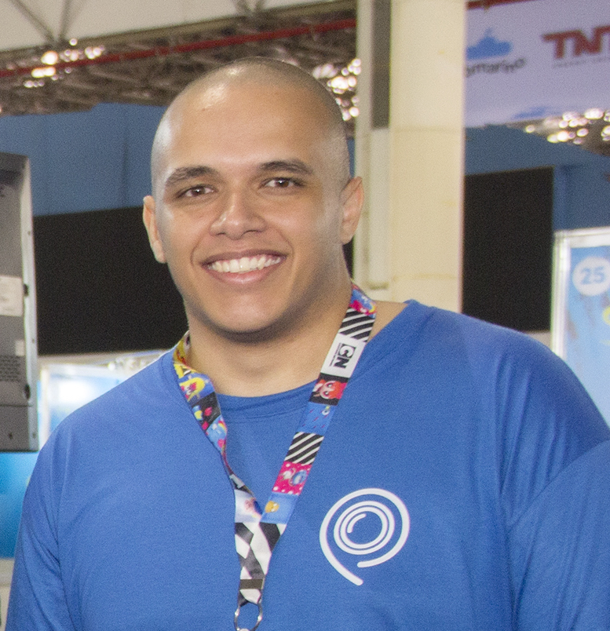

Gramado Summit 2017: The event that marked our history

Leonardo V. LeffaFundador do Pinmyspot
Hi! It's all right?? First I would like to thank you for reading this post here on the Pinmyspot Blog!
We were waiting for a special moment to debut the blog! This is the first of many posts we'll make here!
From August 10 to 12, 2017, we participated in the Gramado Summit. Gramado is one of the cities here in Rio Grande do Sul, you've probably heard about Christmas Light or the chocolate shops that are packed in Easter eve, plus all the beauty that the city has! We were one of the first Startups to be called to participate in the event (15th or 16th if I'm not mistaken) we made a small pitch via skype even for Marcus Rossi who is the CEO and is part of the organization team of the event and also for Vitória Mengue that is part of the organization as well.
I remember rightly that the goal of the event, besides putting Gramado as a reference for entrepreneurship in RS, was really helping Startups to get their ideas across to potential clients and investors. Even because Marcus himself has had an experience with Startup and he knows how complicated this process is. I saw a potential in them and in the event, so we decided to participate (even without R$ to pay the stand .. hahahah )
In the mean time that we knew that we were going to the event until the day of the event a lot happened in our Startup, the main point of this process was the first PIVOT (change of business model of Startup) 1 month before the Gramado Summit .. We sent an email to the organization on July 3 saying that we had changed our product ... hahahah
So after paying the stand, the surprises start ...
• 15 days before the event we received an email from SEBRAE stating that we had been selected to win a Stand Day at Gramado Summit and we could participate in Like a Boss (a Pitch competition that takes place in several events and from the entrance to CASE that is an event that occurs in São Paulo)
• 1 week before the event we received an email saying that we were selected for the Startups Battle that was organized by SuperJobs Ventures and would give R$ 50k in investment to the Startup Winner
For us both were a surprise because we had changed our product a VERY short time, we did not expect to be selected even ...
And to our surprise (again) ...
We won the Battle of Startups and we reached the Final of Like a Boss !!!
With these two achievements we will receive the investment of R$ 50k and we will also participate in CASE in São Paulo that will happen in October!
The Battle of Startups had a draw and awarded two Startups to ours and the folks at Jober!
That also has a giant potential! And a coincidence, we were with the Stand next to them!
For us these final moments was the most emotional point for our team, as Startup see that almost 1 year of hard work was very worthwhile and that we have people who believe in the potential of the idea and Team is a feeling that until now it seems did not fall yet ... And this event marked our history a lot.
And you have a Startup if I could give you some advice: NEVER give up on your dreams!
Even if they call you crazy, say that your product is bad, that you have financial problems or anything else that might disturb you ...
Work as hard as you can! But do not give up! Put your dream and your heart ahead of everything!
I know sometimes it's complicated! But do you know what helps me in this process?
Every time I thought about giving up I see a video that helps me SO MUCH! I'm very much a fan of Steve Jobs, and for me his speech at Stanford is one of life's greatest lessons!
If you have not yet, follow the link: https://www.youtube.com/watch?v=DcqwkdTvTzs
For me the main point of this speech is this:
"When I was 17, I read a quote that said something like" if you live each day as if it were your last, you will be right. "This impressed me, and in the past 33 years I always look in the mirror in the morning and wonder , if today were the last day of my life, would I really want to be doing what I do? And if the answer is "no" for many consecutive days, something needs to be changed.
Remembering that soon I will be dead is the best tool I have found to help me make the great choices of life. Because almost everything - external expectations, pride, fear of failure - disappears before death, which leaves only what is important. Remembering that you're going to die is the best way I know to avoid a trap of dreading what we have to lose. There is no reason not to do what the heart says. "
For me it works (and a lot) to see this video, you can find several ways to stay strong!
That's the important thing! see what can help you in this process, which I guarantee will be worth it!
I want to leave a special thank you to all the Gramado Summit team that made this event, you are part of our history and will always be remembered by us!
Thank all the people who visited our stand and also all the judges who passed us both from the Battle of Startups and from Like a Boss.
And the SuperJobs Ventures! You can be sure that we will always do our best! And you will not regret believing in our team!
If you want to get in touch with us you can call on Facebook or the email: contato@pinmyspot.com.br
We are always at your disposal for anything!
thanks for reading!